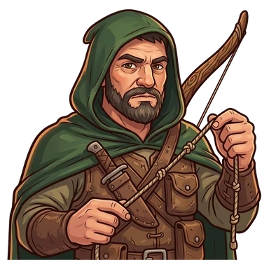
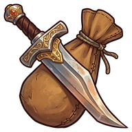

Carrlos


RogueCarrlos Silent Arrow
After their quest: Carrlos, the Arrow That Spoke
Measures twice, cuts once. Speaks once a week.
Ability
Never gets a Resounding success, but on failure collects half instead of a quarter
That's the value at Lv 10: at Lv 1 it's half and it grows every level.
How to get them
Shows up as a recruit candidate at the Inn.
Quest
Carrlos and the full sentence · Argenen
How it ends · Show spoiler
Carrlos said a whole sentence. Subject and predicate. The Governor surrendered out of shock.
Party names
Show spoiler
- Lost and Quiet: Enrique Foster + Carrlos
- Back Door Entrance: Carrlos + Varis
Chronicles
They unlock in-game as they level up. Each gives 1 Rune the first time you read it.
Chapter 1 (Lv 1) · Show spoiler
Measure twice
Carrlos is a scout, an archer and the man of fewest words the Inn has ever known. His motto is "measure twice, cut once," and he applies it to everything: arrows, roads and sentences. He speaks about once a week. When he does, everyone goes quiet, in case it's important. It almost never is. Once they waited ten minutes in silence and Carrlos said "rain." It rained.
Chapter 2 (Lv 5) · Show spoiler
The dictionary
Since Carrlos barely talks, the party put together a dictionary of his gestures. It has forty-seven. Three mean "no," two mean "careful" and one, which nobody has cracked, could mean "I'm hungry" or "there's a bear." TomTom still doesn't know what he asked for back in March. He served him phoenix stew just in case. Carrlos ate it without a word, which in his language might be a compliment.
Chapter 3 (after their quest) · Show spoiler
The full sentence
In Argenen, the party stood before the Governor and his guards. Varis prepared a triumphal entrance. Vavhal, a disguise. Bron, a speech. But before anyone could do anything, Carrlos stepped forward and said a whole sentence. With subject and predicate. Nobody remembers what he said, because they were all in shock. The Governor surrendered out of sheer surprise. Since that day he is no longer Silent Arrow: he is Carrlos, the Arrow That Spoke.
Chapter 4 (Lv 15) · Show spoiler
Plan B
Carrlos never lands a spectacular blow. He's not interested. While the others show off, he measures the way out, counts the enemies and stashes half the loot somewhere safe, before anything starts. That's why, when an expedition goes wrong, the party still comes back with something. It bothers Varis: he says Carrlos ruins his triumphal entrances. Carrlos looks at him. It's gesture number twelve: "I measured twice."
Chapter 5 (Lv 20) · Show spoiler
Two words
One night, when the Inn was already empty, Carrlos walked up to the bar. TomTom braced for another mysterious gesture. But Carrlos looked at him and said, slowly: "Thank you, friend." Two words, without anyone asking. TomTom had to turn around so nobody would see him cry, and then shouted "HOOOO!" so loud it woke the whole Inn. Carrlos went back to his table. For that week, he had already spoken.
Their player
This character is played by a real player from the D&D campaign that inspired the game.